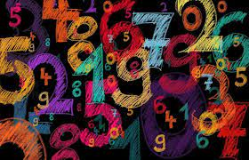
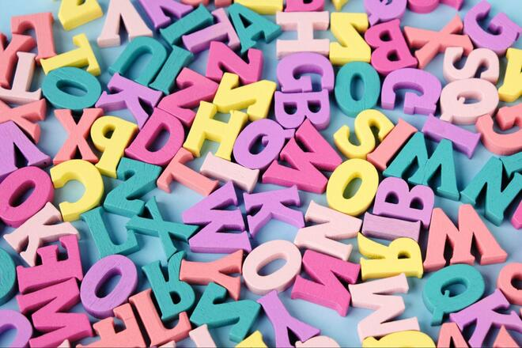
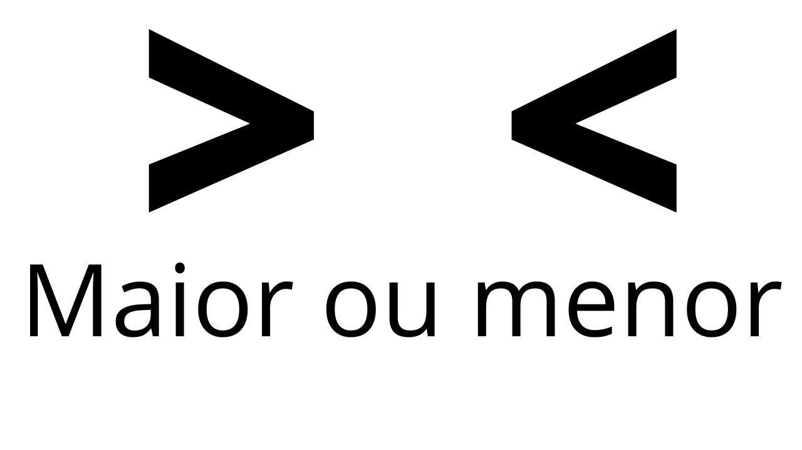
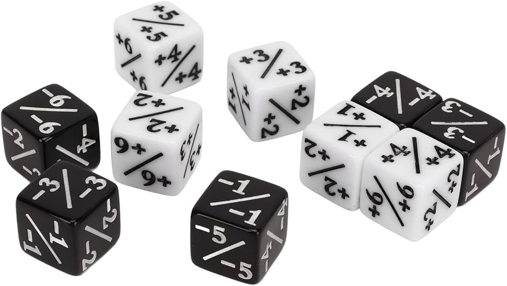

NESTE ESPAÇO, FICAM OS JOGOS PARA TREINAR SEU APRENDIZADO
O PRIMEIRO PASSO, É PRATICAR UMA DAS MAIS IMPORTANTES ÁREAS: A LÓGICA. POR ISSO, SEPARAMOS DIVERSAS OPÇÕES PARA VOCÊ, ALUNO. ESCOLHA ABAIXO AS QUE DESEJA REALIZAR, MAS LEMBRE-SE QUE A PRÁTICA LEVA À PERFEIÇÃO.
DESAFIO DE EINSTEN
Albert Einstein criou este teste de QI no século passado e afirmou que 98% da população
mundial não era capaz de resolvê-lo. Será que você faz parte desse grupo?

SUDOKU
Tem como objetivo
preencher as células vazias com um número em cada célula, de maneira que cada coluna, linha e região
contenha os números apenas uma vez.
.jpg)
JOGOS DE LÓGICA
São atividades que desafiam o raciocínio,
sendo uma forma de entretenimento que estimula a mente, além de benéfico para
o desenvolvimento cognitivo e intelectual.
O SEGUNDO PASSO, TEM COMO OBJETIVO DESENVOLVER A TÉCNICA DA ELABORAÇÃO DE FLUXOGRAMAS, PREPARANDO O ALUNO PARA RESOLVER QUESTÕES DE MANEIRA EFICIENTE.
DESAFIO 1
Construa um fluxograma que faça o seguinte: Peça dois numeros e some-os. Depois, leia em tela o resultado para o usuário.

DESAFIO 2
Construa um fluxograma que resolva: Peça nome, idade, profissão e diga se trata-se de alguém maior ou menor de idade.
DESAFIO 3
Construa um fluxograma: Peça se a pessoa é do sexo masculino ou feminino e leia em tela o resultado para o usuário.
O TERCEIRO PASSO CARACTERIZA-SE COM A INICIAÇÃO À PROGRAMAÇÃO DE FATO, COM O USO DA LINGUAGEM C.
DESAFIO 1
Crie um programa que leia em tela a sentença "Olá, Mundo!"

DESAFIO 2
Crie um programa que peça seu nome e idade. Depois, leia-os em tela

DESAFIO 3
Construa um programa que leia em tela, na forma de um cartão de visita, seus dados básicos.
NO QUARTO PASSO, APROFUNDAMOS UM POUCO MAIS NO ASSUNTO. AGORA, UTILIZAREMOS DAS CHAMADAS "VARIÁVEIS".
DESAFIO 1
Faça um programa que peça o nome de duas pessoas e imprima apenas o primeiro.
DESAFIO 2
Faça um programa que peça para digitar um nome e imprima em tela apenas a primeira letra do nome.

DESAFIO DE EINSTEN
Faça um programa que peça seu nome, idade e sua altura, mas imprima em tela apenas a altura.
CHEGAMOS NO QUINTO PASSO DE NOSSAS AULAS... AGORA, COMEÇAREMOS A UTLIZAR DAS EQUAÇÕES MATEMÁTICAS DENTRO DAS VARIÁVEIS.
DESAFIO 1
Faça uma pequena "calculadora", que peça graus Celsius e os converta para graus Fahrenheit.
.jpg)
DESAFIO 2
Faça um programa que peça sua idade e o dia do seu aniversário. Depois, some-os e divida-os por dois.

DESAFIO 3
Faça um programa que peça o ano corrente e idade, depois subtraia-os, imprimindo em tela seu nascimento.
UFA, CHEGAMOS NA SEXTA ETAPA. NELA, COMEÇAREMOS COM O USO DAS ESTRUTURAS DE DECISÃO. COMEÇANDO COM "IF-ELSE"
DESAFIO 1
Faça um programa que peça dois números e leia em tela apenas o maior deles.

DESAFIO 2
Faça um programa que peça um número e imprima em tela se este é positivo ou negativo.

DESAFIO 3
Faça um programa que peça duas idade, compare qual é a mais velha, e divida a maior por dois.
ESTAMOS AVANÇANDO BASTANTE, CONCORDA? AGORA, USAREMOS DA ESTRUTURA DE DECISÃO "SWITCH CASE", APRESENTADA.
DESAFIO 1
Faça um programa que peça que o usuário digite um número de 1 à 7 e informe qual dia da semana é correspondente.
DESAFIO 2
Faça um programa que peça se a pessoa é "M", de masculino ou "F", de feminimo. Caso não seja digitado a letra correta, declare erro.

DESAFIO 3
Faça uma espécie de "urna eletrônica", informando ao usuário três partidos e candidatos, e peça para que escolha um, imprimindo-o em tela.